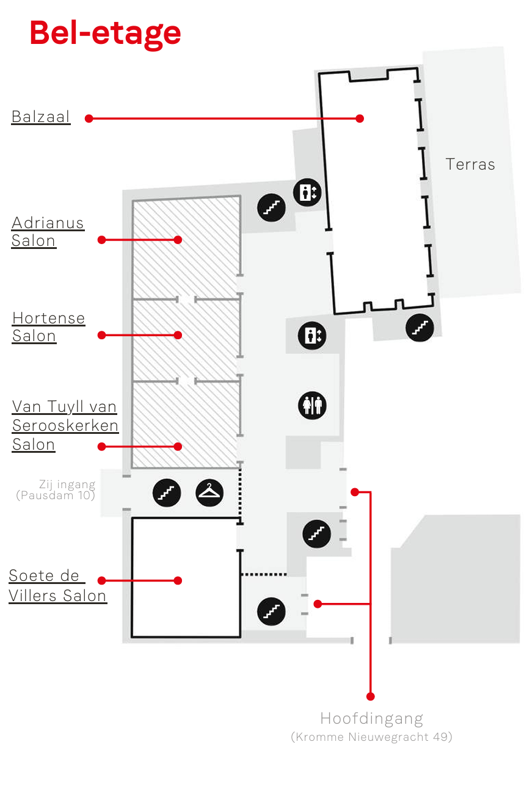

REKA Conferentie 2025
4 september 2025 - Paushuize, Utrecht
Welkom op de REKA Conferentie website. Op deze pagina kan u alles vinden over de REKA conferentie van 4 september, zoals het programma, informatie over de locatie en sprekers, en andere zaken.
Let op: deelname aan de deelsessies is op een 'first-come-first-serve' basis, er zijn helaas geen gereserveerde plekken beschikbaar.
Please note: participation to the workshops is on a 'first-come-first-serve' basis, unfortunately reserving seats is unavailable.


Paushuize kent een rijke historie die teruggaat tot de 16e eeuw. Het pand is gebouwd in opdracht van Paus Adrianus VI, de enige Nederlandse paus. Het prachtige pand weerspiegelt zowel gotische als renaissancistische architectuur, en heeft in de loop der eeuwen vele prominente gasten mogen verwelkomen.
De Paus
Paus Adrianus VI, geboren als Adriaan Floriszoon Boeyens in 1459, was de enige Nederlandse paus in de geschiedenis. Al stond hij bekend om zijn pogingen om de kerk te hervormen en de corruptie binnen de curie aan te pakken. Zijn korte pontificaat van slechts 20 maanden werd gekenmerkt door politieke turbulentie en weerstand tegen zijn hervormingen. Ondanks zijn impopulariteit in Rome, bleef Adrianus VI een toegewijde en plichtsgetrouwe leider. Hij overleed in 1523.
Het pand
Paushuize is gebouwd in 1517 en oorspronkelijk bedoeld als residentie voor Paus Adrianus VI. Na de dood van de paus in 1523, werd Paushuize gebruikt voor diverse doeleinden, waaronder als woning voor hoogwaardigheidsbekleders en als locatie voor officiële ontvangsten. In de 19e en 20e eeuw diende het pand als ambtswoning voor de commissaris van de Koning(in) in Utrecht. Tegenwoordig wordt Paushuize ingezet als evenementenlocatie voor zowel zakelijke- als particuliere evenementen.
Huisregels
Hou er rekening mee dat de conferentie plaatsvindt in een monumentaal pand. Wees dus voorzichtig met de antieke meubels, zet drankjes en de lunch bijvoorbeeld alleen op statafels met bekleding, en wees voorzichtig met alle prachtige schilderijen die er hangen. Het is net een museum. Het terras dat aan Paushuize vast zit mag vrij gebruikt worden, het terras aan de overkant is van de Universiteit Utrecht en niet toegankelijk. Roken is op het gehele terrein niet toegestaan.
Programma 4 september 2025
Programma op hoofdlijnen

9:00 Inloop en registratie
U bent welkom vanaf 9:00 voor de registratie en een kop koffie.
9:30 Opening, welkom en keynotes (Livestream)
 Bob Deen is Senior Research Fellow en hoofd van de Security Unit van de Research afdeling van Clingendael.
Bob Deen is Senior Research Fellow en hoofd van de Security Unit van de Research afdeling van Clingendael. Erik Weststrate is Directeur Europa bij het Ministerie van Buitenlandse Zaken.
Erik Weststrate is Directeur Europa bij het Ministerie van Buitenlandse Zaken.:format(webp)/s3/static.nrc.nl/hpe/6bf4ed8-copMD-NRC1-2057-removebg-preview.png) Simone Peek is verslaggever bij het NRC.
Simone Peek is verslaggever bij het NRC.
 Joanneke Balfoort is de Nederlandse Ambassadeur in Moskou.
Joanneke Balfoort is de Nederlandse Ambassadeur in Moskou.
 Pjotr Sauer is verslaggever bij The Guardian.
Pjotr Sauer is verslaggever bij The Guardian.Niels Drost neemt kort het programma door en legt uit hoe de dag is opgebouwd.
 Niels Drost is een Research Fellow bij de Security Unit en het Russia & Eastern Europe Centre (CREEC) van Clingendael.
Niels Drost is een Research Fellow bij de Security Unit en het Russia & Eastern Europe Centre (CREEC) van Clingendael.10:30 Workshops ronde 1: regio's
This session will be held in English
This session puts the focus on Belarus in light of the latest developments. These include the closure of USAID, increased security threats from Russia and Belarus for Europe, but also the steadfast Dutch and EU policy vis-a-vis the Belarusian society since 2020. This presents both opportunities and challenges for the Netherlands and the EU, and warrants close consultation with experts from the field.
 Matthew Frear is Assistant Professor in Russian and Eurasian Studies at Leiden University.
Matthew Frear is Assistant Professor in Russian and Eurasian Studies at Leiden University. Wicke van den Broek is currently a PhD candidate at Maastricht University, researching democracy promotion in Belarus.
Wicke van den Broek is currently a PhD candidate at Maastricht University, researching democracy promotion in Belarus. Franka Hummels is a Freelance Journalist.
Franka Hummels is a Freelance Journalist. Hanna Liubakovais a nonresident fellow with the Atlantic Council's Eurasia Center and a freelance journalist and researcher from Belarus.
Hanna Liubakovais a nonresident fellow with the Atlantic Council's Eurasia Center and a freelance journalist and researcher from Belarus. Kaspar Pucek is a Research Fellow within the Security Unit and the Russia & Eastern Europe Centre (CREEC) at the Clingendael Institute.
Kaspar Pucek is a Research Fellow within the Security Unit and the Russia & Eastern Europe Centre (CREEC) at the Clingendael Institute.In deze workshop gaan we in op de kansen op en obstakels voor een duurzame vrede in Oekraïne. We bespreken daarvoor de geopolitieke context en recente ontwikkelingen, de rol van enerzijds de VS en Europa en anderzijds de landen uit het mondiale zuiden en tenslotte de veranderende percepties op vrede binnen de Oekraïense samenleving.
Bob Deen is Senior Research Fellow en hoofd van de Security Unit van de Research afdeling van Clingendael. Robert Serry is oud-diplomaat en ambassadeur.
Robert Serry is oud-diplomaat en ambassadeur. Geert Jan Hahn is Europa-verslaggever voor BNR nieuwsradio.
Geert Jan Hahn is Europa-verslaggever voor BNR nieuwsradio. Esselien van Eerten is diplomaat en voormalig vice-ambassadeur in Kyiv.
Esselien van Eerten is diplomaat en voormalig vice-ambassadeur in Kyiv.This session will be held in English
An interactive session to brief the audience on regional developments in Russia: The speakers will explore sources of tension in different regions, and forms of active and passive resistance against the Kremlin. During the session we’ll go into some commonalities and differences between regions and discuss responses of the Kremlin to regional developments. Activists and analysts will argue why regional developments, movements and activists matter to European peace and security.
 Dordzhi Naminov is an anti-war activist from the Republic of Kalmykia in the Russian Federation.
Dordzhi Naminov is an anti-war activist from the Republic of Kalmykia in the Russian Federation. Gulnaz Sibgatullina is an Assistant Professor for Illiberal Regimes in the Department of History, European Studies, and Religious Studies at the University of Amsterdam.
Gulnaz Sibgatullina is an Assistant Professor for Illiberal Regimes in the Department of History, European Studies, and Religious Studies at the University of Amsterdam. Leyla Latypova is a journalist and political analyst specializing in the politics and civil society of Russia’s ethnic republics.
Leyla Latypova is a journalist and political analyst specializing in the politics and civil society of Russia’s ethnic republics.This session will be held in English
The Middle Corridor—linking Central Asia, the South Caucasus, and Europe—is increasingly seen as a critical alternative trade and energy route. For the EU and the Netherlands, it offers opportunities to diversify supply chains, strengthen economic resilience, and deepen ties with strategically important regions. At the same time, the corridor presents challenges: political instability, governance risks, infrastructure bottlenecks, and environmental concerns may undermine its potential.
This panel, organised and moderated by Agha Bayramov (Rijksuniversiteit Groningen & The Hague Research Institute) and Douwe van der Meer (Independent Researcher), will bring together experts and practitioners from academia, policy, and business to examine how Dutch and European stakeholders can benefit from the Middle Corridor Project and navigate its challenges. Agha Bayramov is Assistant Professor of International Relations at the Rijksuniversiteit Groningen and co-founder of The Hague Research Institute.
Agha Bayramov is Assistant Professor of International Relations at the Rijksuniversiteit Groningen and co-founder of The Hague Research Institute. Douwe van der Meer is an independent researcher focused on water, energy, climate and security in Eastern Europe, Turkey, the Caucasus and Central Asia.
Douwe van der Meer is an independent researcher focused on water, energy, climate and security in Eastern Europe, Turkey, the Caucasus and Central Asia. Kamshat Saginbekova has a PhD in Political and Social Sciences and is a Teaching Professor at Maqsut Narikbayev University, Astana, Kazakhstan.
Kamshat Saginbekova has a PhD in Political and Social Sciences and is a Teaching Professor at Maqsut Narikbayev University, Astana, Kazakhstan. Ikboljon Qoraboyev is a Professor and Director of the Center for Global and Regional Governance at Maqsut Narikbayev University in Astana, Kazakhstan.
Ikboljon Qoraboyev is a Professor and Director of the Center for Global and Regional Governance at Maqsut Narikbayev University in Astana, Kazakhstan. Iain Rawlinson is an independent Non-executive Director at Eurasia Mining PLC.
Iain Rawlinson is an independent Non-executive Director at Eurasia Mining PLC. Natasja Nikolic is a Senior Policy Officer at the International Enterprise Department of the Dutch ministry of Foreign Affairs.
Natasja Nikolic is a Senior Policy Officer at the International Enterprise Department of the Dutch ministry of Foreign Affairs.Tussen de drie besproken landen bestaan zowel paralellen als grote verschillen als het gaat om democratische ontwikkeling en geopolitieke positionering. Jarenlang was Georgië een voorloper op het gebied van democratisering, maar sinds de parlementsverkiezingen van oktober vorig jaar worden democratische vrijheden en publieke ruimte snel ingeperkt. In Moldavië wist de pro-Europese en hervormingsgezinde president in diezelfde maand de verkiezingen te winnen, maar staat in de parlementaire verkiezingen volgende maand een nieuwe krachtmeting tussen verschillende machtsblokken op de agenda. Armenië lijkt de rol van regionale democratische voorloper te hebben overgenomen, maar ook daar staat de regering onder druk, en de uitslagen van de parlementaire verkiezingen in juni 2026 zijn ongewis.
In alle drie de landen spelen zowel interne factoren en de dynamiek van eigen politieke processen, alsook de geopolitieke omstandigheden en richting van het buitenlands beleid een belangrijke rol. Hoe gaan de landen om met Russische invloed en Europese aspiraties, en hoe hangt dit samen met de interne politieke en sociaal-economische ontwikkelingen? In deze workshop blikken we terug én vooruit op de verkiezingen, en bespreken we zowel de overeenkomsten als de uiteenlopende keuzes die in Tbilisi, Chisinau en Jerevan worden gemaakt, de consequenties daarvan en de lessen voor Europa: welke rol spelen wij hierin, welk scenario is wenselijk voor de EU en hoe kunnen we dit bevorderen?
 Jelger Groeneveld is Georgië-kenner.
Jelger Groeneveld is Georgië-kenner. Marina Ohanjanyan is een Senior Research Fellow binnen de Security Unit van instituut Clingendael.
Marina Ohanjanyan is een Senior Research Fellow binnen de Security Unit van instituut Clingendael.Een moment om met andere deelnemers bij te praten.
11:45 Lunchpauze
Ukraine has been fighting for its identity, for its history, for the right to choose its path of development, for the right to determine its future. Modern digital technologies make it possible to shorten the distance between different people, remove borders, and open the opportunity for anyone to touch the common cultural heritage of humanity.
That’s why we use innovative technologies to build a cultural bridge between Ukraine and European countries. We want to give people from all European countries the opportunity to see cultural treasures with their own eyes, to give them the chance to touch them regardless of place of residence, age, physical and financial limitations. And in our case - regardless even of war.
13:15 Workshops ronde 2: algemeen
Hoe ziet de toekomstige samenwerking tussen Moskou en Beijing er uit? In deze interactieve scenario-workshop staat het Chinees-Russische partnerschap centraal. We verkennen drie toekomsten: een verslechtering van de relatie, een voortzetting van de huidige trend, en een stevige intensivering van de samenwerking op meerdere fronten. Samen met de deelnemers onderzoeken wij welke dynamieken het partnerschap in de toekomst zullen bepalen en welke geopolitieke gevolgen deze scenario’s kunnen hebben voor Nederland en de EU.
 Tobias Koster is onderzoeker bij het China Centrum van instituut Clingendael.Kaspar Pucek is een Research Fellow binnen de Security Unit en de Russia & Eastern Europe Centre (CREEC) van instituut Clingendael.
Tobias Koster is onderzoeker bij het China Centrum van instituut Clingendael.Kaspar Pucek is een Research Fellow binnen de Security Unit en de Russia & Eastern Europe Centre (CREEC) van instituut Clingendael.This session will be held in English
This meeting brings together government representatives, experts, companies, and civil society organizations from Ukraine and the Netherlands to discuss how the reconstruction of the Ukrainian energy sector can be organized in a more secure, resilient, and decentralized manner, and what role the Netherlands can play in this, looking at both the acute needs and the long-term development of the Ukrainian energy system.
 Joost Klarenbeek is the Dutch special envoy for Ukraine.
Joost Klarenbeek is the Dutch special envoy for Ukraine. André Faaij is Director of Science & Technology at TNO Energy & Material Transition.
André Faaij is Director of Science & Technology at TNO Energy & Material Transition. Oksana Zolotaryova is deputy legal representative in the case against Russia in the International Court of Justice (ICJ) in The Hague.
Oksana Zolotaryova is deputy legal representative in the case against Russia in the International Court of Justice (ICJ) in The Hague. Oleksandr Vizir is Chief Executive Officer at VIB Assets.
Oleksandr Vizir is Chief Executive Officer at VIB Assets. Bram Romijn is second Secretary for Energy and Climate at the embassy of the Netherlands to Ukraine.
Bram Romijn is second Secretary for Energy and Climate at the embassy of the Netherlands to Ukraine.This session will be held in English
This session aims to address the urgent challenges of food security related to the war in Ukraine and the shifting geopolitical realities and consequences for Europe. Through the REKA platform, experts and participants will explore how science diplomacy can advance policy, research, and capacity-building for more resilient and coherent food systems with accents on food systems and environment. The session will present the findings from the GeoFoodSafEU-UA project and lived experiences from Ukraine and the Netherlands, the session will highlight key tensions between food security, national security, and sustainability. Lessons for Ukraine’s resilience point to the importance of diversifying supply chains, fostering climate-smart and decentralized agriculture, strengthening local communities, and building international partnerships that balance immediate security needs with long-term sustainability.
 Sigrid Wertheim-Heck is associate professor in global food system sustainability at the Environmental Policy Group of Wageningen University, and professor Food and Healthy Living at the Aeres University of Applied Sciences.
Sigrid Wertheim-Heck is associate professor in global food system sustainability at the Environmental Policy Group of Wageningen University, and professor Food and Healthy Living at the Aeres University of Applied Sciences. Vanya Simeonova is Manager International Relations Central & Eastern Europe at Wageningen University and Research.
Vanya Simeonova is Manager International Relations Central & Eastern Europe at Wageningen University and Research. Russissche propaganda gebruikt verschillende bouwstenen om verschillende doelgroepen te bereiken in binnen- en buitenland. Wat voor bouwstenen zijn dat? Hoe sluiten deze aan bij bestaande sentimenten van rechtsradicale bewegingen? Welke rol speelt het verhaal van Russki Mir en de Russisch Orthodoxe Kerk? Waarom is er eigenlijk zoveel sympathie voor het Russische verhaal bij sommige MAGA-persoonlijkheden? We bespreken de rol van taal en argumentatieve strategie in het bereiken van verschillende doelgroepen. Ook denken we na over de vraag of er sprake is van een dominante ideologie of dat we steeds meer te maken hebben met meer flexibele ideologische clusters. Hoe kan je daar beleidsmatig op inspelen?
 Egbert Fortuin is hoogleraar Russische taal en taalkunde. Zijn onderzoek richt zich op semantiek, syntaxis en pragmatiek.
Egbert Fortuin is hoogleraar Russische taal en taalkunde. Zijn onderzoek richt zich op semantiek, syntaxis en pragmatiek. Katja Tolstaja is professor aan de Vrije Universiteit van Amsterdam.
Katja Tolstaja is professor aan de Vrije Universiteit van Amsterdam. Marietta van der Tol is onderzoeker in politiek, recht en religie aan de Universiteit van Cambridge.
Marietta van der Tol is onderzoeker in politiek, recht en religie aan de Universiteit van Cambridge.
 Tony van der Togt is Senior Research Fellow bij het Clingendael Russia and Eastern Europe Centre (CREEC).
Tony van der Togt is Senior Research Fellow bij het Clingendael Russia and Eastern Europe Centre (CREEC).Een moment om met andere deelnemers bij te praten.
14:30 Koffiepauze
15:00 Workshops ronde 3
This session will be held in English
More than three years after the escalation of the war in Ukraine the longer-term social impact on the Ukrainian society starts to show. New challenges or acceleration of existing challenges are unfolding, for example the great need for mental health and psychosocial support and increasing social tensions in society. This workshop serves to further examine these challenges and explore how a diversity of Dutch actors may support Ukraine in addressing them. After selecting priority challenges in plenary we will work in a world café setting with different tables fleshing out selected challenges and proposing how different actors may contribute to addressing them.
 Mila Leonova is Director of Alliance UA CSO.
Mila Leonova is Director of Alliance UA CSO. Inge Leuverink is Expert emergency preparedness and humanitarian aid at Cordaid.
Inge Leuverink is Expert emergency preparedness and humanitarian aid at Cordaid. Jelle-Jochem Duits is Policy Officer at the Dutch ministry of Foreign Affairs.
Jelle-Jochem Duits is Policy Officer at the Dutch ministry of Foreign Affairs.Many independent media in and from Eastern Europe are in deep crisis. The implemented cuts in U.S. foreign assistance funding have hit them hard. Radio Free Europe/Radio Liberty, the biggest and most well-known example, has been thrown a lifeline by the European Union, but the survival of many other important media is now hanging by a threat. Why do these independent outlets matter and why should we care? What can the Netherlands and Europe do to support independent and exiled media?
 Jelle Baartmans is Coordinator at RAAM – Platform for knowledge, analysis and debate on Eastern Europe.
Jelle Baartmans is Coordinator at RAAM – Platform for knowledge, analysis and debate on Eastern Europe. Rein Dekkers is Envoy/Special Representative for the EU Eastern Partnership at the Dutch Ministry of Foreign Affairs.Hanna Liubakovais a nonresident fellow with the Atlantic Council's Eurasia Center and a freelance journalist and researcher from Belarus.
Rein Dekkers is Envoy/Special Representative for the EU Eastern Partnership at the Dutch Ministry of Foreign Affairs.Hanna Liubakovais a nonresident fellow with the Atlantic Council's Eurasia Center and a freelance journalist and researcher from Belarus.This workshop focuses on the evolving strategic partnership between Russia and North Korea, its implications for European and global security, and China’s stance. The discussion will analyze how Moscow’s military-technical cooperation with Pyongyang, including arms support and diplomatic engagement, aims to bolster Russia's geopolitical influence and its standing in the war in Ukraine. It will also address North Korea's efforts to leverage this partnership to reshape regional power dynamics, expand its international footprint, and relax sanctions, with China’s involvement — or lack thereof — being instrumental in shaping these developments. Christopher Green, Elena Guido and Eric Zhang will consider how this triangular alliance challenges existing global security frameworks. The session ultimately seeks to provide a nuanced understanding of the short- and long-term impacts of these interactions on international security and stability.
 Elena Guido is a researcher at Leiden Asia Centre.
Elena Guido is a researcher at Leiden Asia Centre. Christopher Green is an assistant professor in the Korean Studies department of Leiden University.
Christopher Green is an assistant professor in the Korean Studies department of Leiden University. Eric Siyi Zhang is a researcher at the LeidenAsiaCentre.
Eric Siyi Zhang is a researcher at the LeidenAsiaCentre.Deze interactieve workshop daagt deelnemers uit om verder te denken over de complexiteit van buitenlandse inmenging en informatiemanipulatie (FIMI) op basis van inzichten uit twee Horizon Europe projecten (DECONSPIRATOR, ARM). Het heeft tot doel om in gesprek te gaan over democratische weerbaarheid en hoe Nederland en Europa kunnen, of zouden moeten, optreden tegen FIMI. Gaufman en Wijermars laten zien hoe zowel buitenlandse als binnenlandse actoren een rol spelen in de verspreiding van desinformatie, de onderdrukking van informatie en narratieve manipulatie om zo het vertrouwen in democratische instituties te ondermijnen. De workshop gaat daarnaast in op Europees en Nederlands beleid om FIMI tegen te gaan en beleidsvoorstellen om de integriteit van het publieke debat en democratische processen te beschermen.
 Mariëlle Wijermarsis Universitair Docent Internet Governance aan de universiteit Maastricht.
Mariëlle Wijermarsis Universitair Docent Internet Governance aan de universiteit Maastricht. Lisa Gaufman is Assistant Professor in Russian Discourse and Politics bij het het departement van European Languages and Cultures aan de Rijksuniversiteit Groningen.
Lisa Gaufman is Assistant Professor in Russian Discourse and Politics bij het het departement van European Languages and Cultures aan de Rijksuniversiteit Groningen.Een moment om met andere deelnemers bij te praten.
16:15 Plenaire afsluiting
We blikken terug op de conferentie. Wat zijn de volgende stappen van de regio? Wat betekent dit voor (het beleid van) Nederland? Bob Deen kijkt terug op de dag en vooruit naar de toekomst.
Bob Deen is Senior Research Fellow en hoofd van de Security Unit van de Research afdeling van Clingendael. Wessel de Jong is correspondent voor de NOS.
Wessel de Jong is correspondent voor de NOS.17:00 Borrel
Met livemuziek verzorgd door Sebastiaan Janse en zijn Jazz-trio, die net afgestudeerd zijn aan het Utrechts Conservatorium.
18:30 Einde van de conferentie
De locatie
In onderstaand figuur is de locatie te zien.
Mocht u gebruik willen maken van de WiFi in Paushuize, dan kunt u hier vinden hoe dat moet.
Over REKA
REKA is een initiatief dat tot doel heeft de aanwezige kennis in Nederland over Rusland en Oost-Europa uit te bouwen, publiek inzichtelijk te maken en beschikbaar te stellen voor de Nederlandse overheid.
'REKA' - Russisch voor rivier - slaat dan ook op de stroom van kennis die dit netwerk beoogt op gang te brengen. Daarvoor hoopt REKA een intensieve samenwerking op te zetten met kennisinstituten, media en andere organisaties binnen Nederland die zich met de regio Rusland en Oost-Europa bezighouden.
Het kennisnetwerk wordt gefinancierd door het Nederlands Ministerie van Buitenlandse Zaken. Het secretariaat wordt gevoerd door een consortium bestaande uit Instituut Clingendael en Raam op Rusland, Oekraïne, en Belarus, gevormd door Bob Deen, Niels Drost en Hubert Smeets.
Contact
Op de website verschijnen geregeld relevante publicaties en events vanuit zowel REKA zelf als partners. Wij nodigen u uit publicaties en evenementen van uw organisatie die u graag op de REKA website vermeld zou zien te uploaden op www.rekanetwerk.org. U kunt ook contact leggen via info@rekanetwork.org.